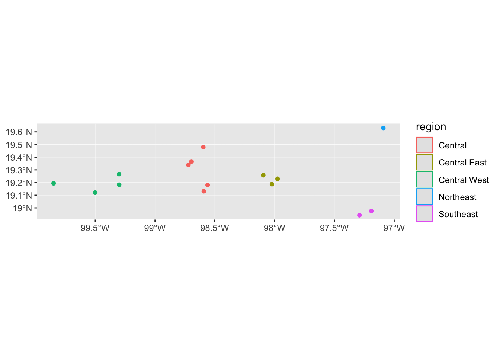
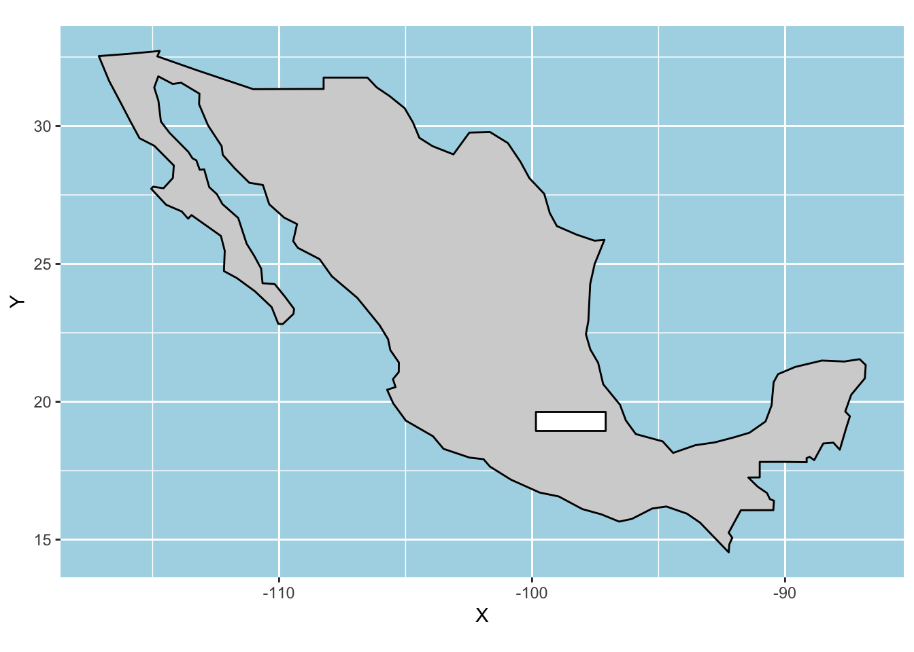

Vector spatial data
Last updated: 2018-09-04
workflowr checks: (Click a bullet for more information)-
✔ R Markdown file: up-to-date
Great! Since the R Markdown file has been committed to the Git repository, you know the exact version of the code that produced these results.
-
✔ Environment: empty
Great job! The global environment was empty. Objects defined in the global environment can affect the analysis in your R Markdown file in unknown ways. For reproduciblity it’s best to always run the code in an empty environment.
-
✔ Seed:
set.seed(20180820)The command
set.seed(20180820)was run prior to running the code in the R Markdown file. Setting a seed ensures that any results that rely on randomness, e.g. subsampling or permutations, are reproducible. -
✔ Session information: recorded
Great job! Recording the operating system, R version, and package versions is critical for reproducibility.
-
Great! You are using Git for version control. Tracking code development and connecting the code version to the results is critical for reproducibility. The version displayed above was the version of the Git repository at the time these results were generated.✔ Repository version: 82b5b1c
Note that you need to be careful to ensure that all relevant files for the analysis have been committed to Git prior to generating the results (you can usewflow_publishorwflow_git_commit). workflowr only checks the R Markdown file, but you know if there are other scripts or data files that it depends on. Below is the status of the Git repository when the results were generated:
Note that any generated files, e.g. HTML, png, CSS, etc., are not included in this status report because it is ok for generated content to have uncommitted changes.Ignored files: Ignored: .DS_Store Ignored: .Rhistory Ignored: .Rproj.user/ Ignored: data/.DS_Store Untracked files: Untracked: .Rbuildignore Untracked: analysis/mapping.Rmd Untracked: data-raw/ Untracked: data/csv/ Untracked: data/raster/ Untracked: data/sf/ Unstaged changes: Modified: analysis/index.Rmd Modified: analysis/intro.Rmd
Expand here to see past versions:
| File | Version | Author | Date | Message |
|---|---|---|---|---|
| Rmd | 82b5b1c | annakrystalli | 2018-09-04 | workflowr::wflow_publish(“analysis/vector.Rmd”) |
| html | 48814f0 | annakrystalli | 2018-09-04 | Build site. |
| html | 8a975bc | annakrystalli | 2018-09-04 | Build site. |
| Rmd | aae5895 | annakrystalli | 2018-09-04 | workflowr::wflow_publish(c(“analysis/vector.Rmd”)) |
setup
Open Notebook
Open a new R Notebook to work in.
File > New File > R Notebook
Name (eg. Vectors) and save it
Load libraries
Load the libraries we’ll be using for this section of the workshop
library(sf)
library(ggplot2)
library(dplyr)
library(spData)Vector data:
Geographic vector data model is based on points, usually located within a coordinate reference system (CRS).
Most point geometries contain only two dimensions \(x\) & \(y\) but 3 dimensional CRSs contain an additional \(z\) value -> height above sea level.
Coordinates consist of two numbers representing distance from an origin in the \(x\) & \(y\) dimensions.
simple features
The Simple Features data model is a widely supported model that underlies vector data structures in many GIS applications.
It is a hierarchical model that represents a wide range of geometry types.
- single points -> self-standing features (e.g. sampling location)
- Points can be linked together to form more complex geometries:
- lines
- polygons
- ‘multi’ versions of each represent groups of features of the same type into a single feature.
- geometry collections, which can contain multiple geometry types in a single object.

*Figure 2.2: The subset of the Simple Features class hierarchy supported by sf. Image source: https://geocompr.robinlovelace.net/figures/sf-classes.png*
{kind=link}
package sf
sf is an R package providing a class system for geographic vector data using the simple features data model.
Supercedes and combines the functionality of three previously used packages: - sp for the class system, - rgdal for reading and writing data, - rgeos for spatial operations undertaken by GEOS in a single, cohesive whole.
Benefits of sf vs sp classes
- Fast reading and writing of data
- Enhanced plotting performance
sfobjects can be treated as data frames in most operationssffunctions can be combined using the pipe (%>%) operator and works well with the tidyverse collection of R packagessffunction names are relatively consistent and intuitive (all begin with st_)- geometry a list in
geometrycolumn regardless of geometry type but can easily be transformed to aSpatialclass used inspusing functionas_Spatial().
simple feature anatomy
Simple feature objects are hierarchically organised as follows:
sf: simple feature, data.frame with spatial list-column (geomorgeometry) as well as additional data associated with the spatial geometries.
sfc: simple feature column. A list-column containing multiple geometries + information about the coordinate reference system.
sfg: simple feature geometry. a single simple feature geometry
creating vector data
sf provides a number of function for creating simple feature geometries, bringing multiple geometries together in a simple feature column.
a single point feature
To create single points, we can use function sf::st_point() and supply a vector of x & y coordinates as argument x
st_point(x = c(0,0))multiple point feature
For multiple points in a single geometry, we can use function sf::st_multipoint() and supply a two column numeric matrix with x & y coordinates of points in rows.
st_multipoint(x = matrix(c(0, 0, 1, 0), ncol = 2, byrow = T))Let’s assign this to an object.
points <- st_multipoint(x = matrix(c(0, 0, 2, 0), ncol = 2, byrow = T))We can check the class of the points we just created:
class(points)[1] "XY" "MULTIPOINT" "sfg" And we can also quickly plot geometries to inspect them:
plot(points)Expand here to see past versions of unnamed-chunk-6-1.png:
| Version | Author | Date |
|---|---|---|
| 8a975bc | annakrystalli | 2018-09-04 |
line feature
Similarly, we can create line features using function sf::st_linestring() and supplying a two column numeric matrix with x & y coordinates of points in rows.
line <- st_linestring(x = matrix(c(-1, -2, -0.5, -3, 2.5, -3, 3, -2),
ncol = 2, byrow = T))
lineplot(line)Expand here to see past versions of unnamed-chunk-8-1.png:
| Version | Author | Date |
|---|---|---|
| 8a975bc | annakrystalli | 2018-09-04 |
Combining sfgs into an sfc
We can then combine our geometries into an simple feature list-column (sfc).
sfc <- st_sfc(points, line)class(sfc)[1] "sfc_GEOMETRY" "sfc" plot(sfc)Expand here to see past versions of unnamed-chunk-11-1.png:
| Version | Author | Date |
|---|---|---|
| 8a975bc | annakrystalli | 2018-09-04 |
Creating an sf and adding attribute data
We can now add some attribute data, eg names for the shapes we created, and create a simple feature (sf).
sf <- st_sf(shape = c("eyes", "mouth"), geom = sfc)
sfSimple feature collection with 2 features and 1 field
geometry type: GEOMETRY
dimension: XY
bbox: xmin: -1 ymin: -3 xmax: 3 ymax: 0
epsg (SRID): NA
proj4string: NA
shape geom
1 eyes MULTIPOINT (0 0, 2 0)
2 mouth LINESTRING (-1 -2, -0.5 -3,...class(sf)[1] "sf" "data.frame"plot(sf)Expand here to see past versions of unnamed-chunk-14-1.png:
| Version | Author | Date |
|---|---|---|
| 8a975bc | annakrystalli | 2018-09-04 |
Exercise
1) add a nose!
Create a nose geometry, combine all the shapes into a single sf and then plot the face.
Working with simple feature vector data
world dataset in pkg spData
Package spData provides spatial datasets in a variety of formats, including a number of sf data.
One of these is the world data set, containing the current boundaries of countries and including additional demographic, geographic attribute data
library(spData)worldSimple feature collection with 177 features and 10 fields
geometry type: MULTIPOLYGON
dimension: XY
bbox: xmin: -180 ymin: -90 xmax: 180 ymax: 83.64513
epsg (SRID): 4326
proj4string: +proj=longlat +datum=WGS84 +no_defs
First 10 features:
iso_a2 name_long continent region_un subregion
1 FJ Fiji Oceania Oceania Melanesia
2 TZ Tanzania Africa Africa Eastern Africa
3 EH Western Sahara Africa Africa Northern Africa
4 CA Canada North America Americas Northern America
5 US United States North America Americas Northern America
6 KZ Kazakhstan Asia Asia Central Asia
7 UZ Uzbekistan Asia Asia Central Asia
8 PG Papua New Guinea Oceania Oceania Melanesia
9 ID Indonesia Asia Asia South-Eastern Asia
10 AR Argentina South America Americas South America
type area_km2 pop lifeExp gdpPercap
1 Sovereign country 19289.97 885806 69.96000 8222.254
2 Sovereign country 932745.79 52234869 64.16300 2402.099
3 Indeterminate 96270.60 NA NA NA
4 Sovereign country 10036042.98 35535348 81.95305 43079.143
5 Country 9510743.74 318622525 78.84146 51921.985
6 Sovereign country 2729810.51 17288285 71.62000 23587.338
7 Sovereign country 461410.26 30757700 71.03900 5370.866
8 Sovereign country 464520.07 7755785 65.23000 3709.082
9 Sovereign country 1819251.33 255131116 68.85600 10003.089
10 Sovereign country 2784468.59 42981515 76.25200 18797.548
geom
1 MULTIPOLYGON (((180 -16.067...
2 MULTIPOLYGON (((33.90371 -0...
3 MULTIPOLYGON (((-8.66559 27...
4 MULTIPOLYGON (((-122.84 49,...
5 MULTIPOLYGON (((-122.84 49,...
6 MULTIPOLYGON (((87.35997 49...
7 MULTIPOLYGON (((55.96819 41...
8 MULTIPOLYGON (((141.0002 -2...
9 MULTIPOLYGON (((141.0002 -2...
10 MULTIPOLYGON (((-68.63401 -...Country polygons from the world dataset
We can get more information on the data containing through r help
?worldManipulating sf objects
As discussed the data is effectively a data.frame, with an additional geom column containing the geographic data. As such it can be manipulated as any other data.frame.
getting attribute information
names(world) [1] "iso_a2" "name_long" "continent" "region_un" "subregion"
[6] "type" "area_km2" "pop" "lifeExp" "gdpPercap"
[11] "geom" indexing
We can index sf objects like any other data.frame.
E.g. we can index columns using the $ notation:
world$iso_a2 [1] FJ TZ EH CA US KZ UZ PG ID AR CL CD SO KE
[15] SD TD HT DO RU BS FK <NA> GL TF TL ZA LS MX
[29] UY BR BO PE CO PA CR NI HN SV GT BZ VE GY
[43] SR <NA> EC PR JM CU ZW BW NA SN ML MR BJ NE
[57] NG CM TG GH CI GN GW LR SL BF CF CG GA GQ
[71] ZM MW MZ SZ AO BI IL LB MG PS GM TN DZ JO
[85] AE QA KW IQ OM VU KH TH LA MM VN KP KR MN
[99] IN BD BT NP PK AF TJ KG TM IR SY AM SE BY
[113] UA PL AT HU MD RO LT LV EE DE BG GR TR AL
[127] HR CH LU BE NL PT ES IE NC SB NZ AU LK CN
[141] TW IT DK GB IS AZ GE PH MY BN SI FI SK CZ
[155] ER JP PY YE SA AQ <NA> CY MA EG LY ET DJ <NA>
[169] UG RW BA MK RS ME XK TT SS
173 Levels: AE AF AL AM AO AQ AR AT AU AZ BA BD BE BF BG BI BJ BN BO ... ZWOr by using [,] indexing, in this case, by supplying a vector of column names to the second argument of the square brackets.
world[, c("iso_a2", "name_long")]Simple feature collection with 177 features and 2 fields
geometry type: MULTIPOLYGON
dimension: XY
bbox: xmin: -180 ymin: -90 xmax: 180 ymax: 83.64513
epsg (SRID): 4326
proj4string: +proj=longlat +datum=WGS84 +no_defs
First 10 features:
iso_a2 name_long geom
1 FJ Fiji MULTIPOLYGON (((180 -16.067...
2 TZ Tanzania MULTIPOLYGON (((33.90371 -0...
3 EH Western Sahara MULTIPOLYGON (((-8.66559 27...
4 CA Canada MULTIPOLYGON (((-122.84 49,...
5 US United States MULTIPOLYGON (((-122.84 49,...
6 KZ Kazakhstan MULTIPOLYGON (((87.35997 49...
7 UZ Uzbekistan MULTIPOLYGON (((55.96819 41...
8 PG Papua New Guinea MULTIPOLYGON (((141.0002 -2...
9 ID Indonesia MULTIPOLYGON (((141.0002 -2...
10 AR Argentina MULTIPOLYGON (((-68.63401 -...Note that although we selected only two columns, the geom column is still retained.
And we can index rows by supplying eg the row number(s) required to the first argument of the square brackets.
world[1,]Simple feature collection with 1 feature and 10 fields
geometry type: MULTIPOLYGON
dimension: XY
bbox: xmin: -180 ymin: -18.28799 xmax: 180 ymax: -16.02088
epsg (SRID): 4326
proj4string: +proj=longlat +datum=WGS84 +no_defs
iso_a2 name_long continent region_un subregion type
1 FJ Fiji Oceania Oceania Melanesia Sovereign country
area_km2 pop lifeExp gdpPercap geom
1 19289.97 885806 69.96 8222.254 MULTIPOLYGON (((180 -16.067...dplyr functions and piping
But even nicer is that we can use dplyr functions with sfs. Especially exciting is the ability to set up pipelines using the dplyr pipe (%>%).
selecting
We can pipe the spData::world sf into function dplyr::select() to select specific columns. Note that in dplyr functions, you can use column names bare (ie without "...").
world %>% select(iso_a2, name_long)Simple feature collection with 177 features and 2 fields
geometry type: MULTIPOLYGON
dimension: XY
bbox: xmin: -180 ymin: -90 xmax: 180 ymax: 83.64513
epsg (SRID): 4326
proj4string: +proj=longlat +datum=WGS84 +no_defs
First 10 features:
iso_a2 name_long geom
1 FJ Fiji MULTIPOLYGON (((180 -16.067...
2 TZ Tanzania MULTIPOLYGON (((33.90371 -0...
3 EH Western Sahara MULTIPOLYGON (((-8.66559 27...
4 CA Canada MULTIPOLYGON (((-122.84 49,...
5 US United States MULTIPOLYGON (((-122.84 49,...
6 KZ Kazakhstan MULTIPOLYGON (((87.35997 49...
7 UZ Uzbekistan MULTIPOLYGON (((55.96819 41...
8 PG Papua New Guinea MULTIPOLYGON (((141.0002 -2...
9 ID Indonesia MULTIPOLYGON (((141.0002 -2...
10 AR Argentina MULTIPOLYGON (((-68.63401 -...filtering
We can also filter rows using function dplyr::filter(). Let’s try and get the row for Greece, which is represented by iso code "GR":
world %>% filter(iso_a2 == "GR")Simple feature collection with 1 feature and 10 fields
geometry type: MULTIPOLYGON
dimension: XY
bbox: xmin: 20.15002 ymin: 34.91999 xmax: 26.6042 ymax: 41.8269
epsg (SRID): 4326
proj4string: +proj=longlat +datum=WGS84 +no_defs
iso_a2 name_long continent region_un subregion type
1 GR Greece Europe Europe Southern Europe Sovereign country
area_km2 pop lifeExp gdpPercap geom
1 131964.6 10892413 81.38537 24081.63 MULTIPOLYGON (((26.29 35.29...summarising
We can even summarise our attribute data using, for example, function base::summary().
summary(world) iso_a2 name_long continent
AE : 1 Afghanistan: 1 Africa :51
AF : 1 Albania : 1 Asia :47
AL : 1 Algeria : 1 Europe :39
AM : 1 Angola : 1 North America:18
AO : 1 Antarctica : 1 South America:13
(Other):168 Argentina : 1 Oceania : 7
NA's : 4 (Other) :171 (Other) : 2
region_un subregion type
Africa :51 Western Asia :18 Country : 11
Americas :31 Eastern Africa :16 Dependency : 4
Antarctica : 1 Western Africa :15 Disputed : 1
Asia :47 South America :13 Indeterminate : 3
Europe :39 Southern Europe:12 Sovereign country:158
Oceania : 7 Eastern Europe :10
Seven seas (open ocean): 1 (Other) :93
area_km2 pop lifeExp gdpPercap
Min. : 2417 Min. :5.630e+04 Min. :50.62 Min. : 597.1
1st Qu.: 46185 1st Qu.:3.755e+06 1st Qu.:64.96 1st Qu.: 3752.4
Median : 185004 Median :1.040e+07 Median :72.87 Median : 10734.1
Mean : 832558 Mean :4.282e+07 Mean :70.85 Mean : 17106.0
3rd Qu.: 621860 3rd Qu.:3.075e+07 3rd Qu.:76.78 3rd Qu.: 24232.7
Max. :17018507 Max. :1.364e+09 Max. :83.59 Max. :120860.1
NA's :10 NA's :10 NA's :17
geom
MULTIPOLYGON :177
epsg:4326 : 0
+proj=long...: 0
extracting geometries
We can extract the geometry list-column from an sf with function sf::st_geometry.
st_geometry(world) Geometry set for 177 features
geometry type: MULTIPOLYGON
dimension: XY
bbox: xmin: -180 ymin: -90 xmax: 180 ymax: 83.64513
epsg (SRID): 4326
proj4string: +proj=longlat +datum=WGS84 +no_defs
First 5 geometries:extracting coordinates
We can also extract a matrix of coordinates of an sf possibly followed by integer indicators L1,…,L3 that point out to which structure the coordinate belongs:
- for
POINTthis is absent (each coordinate is a feature) - for
LINESTRINGL1 refers to the feature - for
MULTIPOLYGON- L1 refers to the main ring or holes
- L2 to the ring id in the MULTIPOLYGON,
- and L3 to the simple feature.
world %>% filter(iso_a2 == "GR") %>% st_coordinates() X Y L1 L2 L3
[1,] 26.29000 35.29999 1 1 1
[2,] 26.16500 35.00500 1 1 1
[3,] 24.72498 34.91999 1 1 1
[4,] 24.73501 35.08499 1 1 1
[5,] 23.51498 35.27999 1 1 1
[6,] 23.69998 35.70500 1 1 1
[7,] 24.24667 35.36802 1 1 1
[8,] 25.02502 35.42500 1 1 1
[9,] 25.76921 35.35402 1 1 1
[10,] 25.74502 35.18000 1 1 1
[11,] 26.29000 35.29999 1 1 1
[12,] 22.95238 41.33799 1 2 1
[13,] 23.69207 41.30908 1 2 1
[14,] 24.49264 41.58390 1 2 1
[15,] 25.19720 41.23449 1 2 1
[16,] 26.10614 41.32890 1 2 1
[17,] 26.11704 41.82690 1 2 1
[18,] 26.60420 41.56211 1 2 1
[19,] 26.29460 40.93626 1 2 1
[20,] 26.05694 40.82412 1 2 1
[21,] 25.44768 40.85255 1 2 1
[22,] 24.92585 40.94706 1 2 1
[23,] 23.71481 40.68713 1 2 1
[24,] 24.40800 40.12499 1 2 1
[25,] 23.89997 39.96201 1 2 1
[26,] 23.34300 39.96100 1 2 1
[27,] 22.81399 40.47601 1 2 1
[28,] 22.62630 40.25656 1 2 1
[29,] 22.84975 39.65931 1 2 1
[30,] 23.35003 39.19001 1 2 1
[31,] 22.97310 38.97090 1 2 1
[32,] 23.53002 38.51000 1 2 1
[33,] 24.02502 38.21999 1 2 1
[34,] 24.04001 37.65501 1 2 1
[35,] 23.11500 37.92001 1 2 1
[36,] 23.40997 37.40999 1 2 1
[37,] 22.77497 37.30501 1 2 1
[38,] 23.15423 36.42251 1 2 1
[39,] 22.49003 36.41000 1 2 1
[40,] 21.67003 36.84499 1 2 1
[41,] 21.29501 37.64499 1 2 1
[42,] 21.12003 38.31032 1 2 1
[43,] 20.73003 38.76999 1 2 1
[44,] 20.21771 39.34023 1 2 1
[45,] 20.15002 39.62500 1 2 1
[46,] 20.61500 40.11001 1 2 1
[47,] 20.67500 40.43500 1 2 1
[48,] 20.99999 40.58000 1 2 1
[49,] 21.02004 40.84273 1 2 1
[50,] 21.67416 40.93127 1 2 1
[51,] 22.05538 41.14987 1 2 1
[52,] 22.59731 41.13049 1 2 1
[53,] 22.76177 41.30480 1 2 1
[54,] 22.95238 41.33799 1 2 1extracting crs
We can also retrieve the coordinate reference system from sf or sfc object with function sf::st_crs()
world %>% st_crs()Coordinate Reference System:
EPSG: 4326
proj4string: "+proj=longlat +datum=WGS84 +no_defs"transforming CRSs
We can transform the CRS of an sf by using function sf::st_transform(). Let’s transform the world CRS from WGS 84 to the Mercator projection (epsg:3785).
world_merc <- world %>% st_transform(crs = 3785)
world_mercSimple feature collection with 177 features and 10 fields
geometry type: MULTIPOLYGON
dimension: XY
bbox: xmin: -20037510 ymin: -20801250 xmax: 20037510 ymax: 18440000
epsg (SRID): 3785
proj4string: +proj=merc +a=6378137 +b=6378137 +lat_ts=0.0 +lon_0=0.0 +x_0=0.0 +y_0=0 +k=1.0 +units=m +nadgrids=@null +wktext +no_defs
First 10 features:
iso_a2 name_long continent region_un subregion
1 FJ Fiji Oceania Oceania Melanesia
2 TZ Tanzania Africa Africa Eastern Africa
3 EH Western Sahara Africa Africa Northern Africa
4 CA Canada North America Americas Northern America
5 US United States North America Americas Northern America
6 KZ Kazakhstan Asia Asia Central Asia
7 UZ Uzbekistan Asia Asia Central Asia
8 PG Papua New Guinea Oceania Oceania Melanesia
9 ID Indonesia Asia Asia South-Eastern Asia
10 AR Argentina South America Americas South America
type area_km2 pop lifeExp gdpPercap
1 Sovereign country 19289.97 885806 69.96000 8222.254
2 Sovereign country 932745.79 52234869 64.16300 2402.099
3 Indeterminate 96270.60 NA NA NA
4 Sovereign country 10036042.98 35535348 81.95305 43079.143
5 Country 9510743.74 318622525 78.84146 51921.985
6 Sovereign country 2729810.51 17288285 71.62000 23587.338
7 Sovereign country 461410.26 30757700 71.03900 5370.866
8 Sovereign country 464520.07 7755785 65.23000 3709.082
9 Sovereign country 1819251.33 255131116 68.85600 10003.089
10 Sovereign country 2784468.59 42981515 76.25200 18797.548
geom
1 MULTIPOLYGON (((20037508 -1...
2 MULTIPOLYGON (((3774144 -10...
3 MULTIPOLYGON (((-964649 320...
4 MULTIPOLYGON (((-13674486 6...
5 MULTIPOLYGON (((-13674486 6...
6 MULTIPOLYGON (((9724867 631...
7 MULTIPOLYGON (((6230351 505...
8 MULTIPOLYGON (((15696072 -2...
9 MULTIPOLYGON (((15696072 -2...
10 MULTIPOLYGON (((-7640303 -6...Plotting sf
sf has reasonable native plotting behaviour which can be useful for quick checks of your data.
world %>% plot()Warning: plotting the first 9 out of 10 attributes; use max.plot = 10 to
plot allExpand here to see past versions of unnamed-chunk-29-1.png:
| Version | Author | Date |
|---|---|---|
| 8a975bc | annakrystalli | 2018-09-04 |
world_merc %>% plot()Warning: plotting the first 9 out of 10 attributes; use max.plot = 10 to
plot all
Expand here to see past versions of unnamed-chunk-30-1.png:
| Version | Author | Date |
|---|---|---|
| 8a975bc | annakrystalli | 2018-09-04 |
We can easily select and plot information for a single variable
world %>% select(lifeExp) %>% plot()Expand here to see past versions of unnamed-chunk-31-1.png:
| Version | Author | Date |
|---|---|---|
| 8a975bc | annakrystalli | 2018-09-04 |
We can also extract and just plot out the geometries.
world %>% st_geometry() %>% plot()Expand here to see past versions of unnamed-chunk-32-1.png:
| Version | Author | Date |
|---|---|---|
| 8a975bc | annakrystalli | 2018-09-04 |
Exercises
2) What are the coordinates for the 10th point in the Mexico polygon?
**3) How about in CRS Mexico ITRF92 / UTM zone 15N
4) Are these coordinates projected or not? Can you tell by just looking at the spatial information in the transformed sf object?
A working example
Molecular data on salamanders
The data we will work with are from the paper: Tracking climate change in a dispersal‐limited species: reduced spatial and genetic connectivity in a montane salamander (2013) https://doi.org/10.1111/mec.12310
The researchers where interested in examining how climate and landscape features in montane regions affect population genetic structure of montane salamander Pseudoeurycea leprosa.
To address this they used ecological niche modelling (ENM) and measured spatial connectivity and gene flow across extant populations of P. leprosa in the Trans‐Mexican Volcanic Belt (TVB).
To do this they had to combine their molecular data with environmental data. This is what we will try and reproduce during this workshop.
I’ve created a .csv of the published data containing the following fields, and saved it in file data/csv/salamander_mol.csv.
| field | description |
|---|---|
| id | sample ID |
| locality | sample locality |
| n | sample size |
| mountain_chain | mountain chain |
| region | region |
| latitude | latitude |
| longitude | longitude |
| na | average number of alleles |
| he | expected heterozygosity |
| ar | allelic richness |
| par | private allelic richness |
Let’s read it in using function readr::read_csv(). I’m also using function here::here() to specify the paths in a way that is both portable and will work across different systems.
mol_df <- readr::read_csv(here::here("data", "csv", "salamander_mol.csv"))Note also the use of ::. This allows to call a function without loading the library (so long as the package has been installed).
Now, let’s have a look at the data we just loaded.
mol_df# A tibble: 15 x 11
id locality n mountain_chain region latitude longitude na
<int> <chr> <int> <chr> <chr> <dbl> <dbl> <dbl>
1 1 Nevado de… 12 Nevado de Toluca Centr… 19.2 -99.8 5.44
2 2 Texcalyac… 29 Sierra de las C… Centr… 19.1 -99.5 8.22
3 3 Desierto … 7 Sierra de las C… Centr… 19.3 -99.3 4.44
4 4 Ajusco 8 Sierra de las C… Centr… 19.2 -99.3 4.22
5 8 Calpan 34 Sierra Nevada Centr… 19.1 -98.6 11.9
6 9 Atzompa 43 Sierra Nevada Centr… 19.2 -98.6 10.3
7 10 Llano Gra… 15 Sierra Nevada (… Centr… 19.3 -98.7 7.78
8 11 Rio Frio 27 Sierra Nevada (… Centr… 19.4 -98.7 7.56
9 12 Nanacamil… 14 Sierra Nevada (… Centr… 19.5 -98.6 6.22
10 13 MalincheS 8 Malinche Centr… 19.2 -98.0 5.00
11 14 MalincheW 17 Malinche Centr… 19.3 -98.1 6.67
12 16 MalincheE 13 Malinche Centr… 19.2 -98.0 6.11
13 17 Texmalaqu… 8 Pico de Orizaba South… 18.9 -97.3 6.00
14 18 Xometla 16 Pico de Orizaba South… 19.0 -97.2 9.11
15 19 Vigas 48 Cofre de Perote North… 19.6 -97.1 11.8
# ... with 3 more variables: he <dbl>, ar <dbl>, par <dbl>Converting lat/lon data to simple features
Our data contains geographical coordinates in lat/lot decimal degrees. We can convert these sampling locations to sf geographic points using function sf::st_as_sf(). We can also assign a CRS, in this case we’ll assign WGS 84 which corresponds to epsg:4326.
mol_sf <- sf::st_as_sf(mol_df, coords = c("longitude", "latitude"),
crs = 4326)mol_sfSimple feature collection with 15 features and 9 fields
geometry type: POINT
dimension: XY
bbox: xmin: -99.84806 ymin: 18.94194 xmax: -97.09056 ymax: 19.63083
epsg (SRID): 4326
proj4string: +proj=longlat +datum=WGS84 +no_defs
# A tibble: 15 x 10
id locality n mountain_chain region na he ar par
<int> <chr> <int> <chr> <chr> <dbl> <dbl> <dbl> <dbl>
1 1 Nevado de… 12 Nevado de Toluca Centr… 5.44 0.620 4.56 0.350
2 2 Texcalyac… 29 Sierra de las C… Centr… 8.22 0.660 5.14 0.500
3 3 Desierto … 7 Sierra de las C… Centr… 4.44 0.590 4.44 0.180
4 4 Ajusco 8 Sierra de las C… Centr… 4.22 0.490 4.05 0.0200
5 8 Calpan 34 Sierra Nevada Centr… 11.9 0.730 6.48 0.290
6 9 Atzompa 43 Sierra Nevada Centr… 10.3 0.690 5.79 0.0800
7 10 Llano Gra… 15 Sierra Nevada (… Centr… 7.78 0.650 5.80 0.250
8 11 Rio Frio 27 Sierra Nevada (… Centr… 7.56 0.570 4.77 0.130
9 12 Nanacamil… 14 Sierra Nevada (… Centr… 6.22 0.590 4.91 0.100
10 13 MalincheS 8 Malinche Centr… 5.00 0.580 4.69 0.0900
11 14 MalincheW 17 Malinche Centr… 6.67 0.600 4.76 0.0600
12 16 MalincheE 13 Malinche Centr… 6.11 0.560 4.73 0.210
13 17 Texmalaqu… 8 Pico de Orizaba South… 6.00 0.710 5.64 0.910
14 18 Xometla 16 Pico de Orizaba South… 9.11 0.830 6.86 0.490
15 19 Vigas 48 Cofre de Perote North… 11.8 0.660 5.75 1.31
# ... with 1 more variable: geometry <POINT [°]>Plotting sf with ggplot2
Another great new feature of sf is that ggplot2 provides a dedicated function, ggplot2::geom_sf(), for mapping sf.
Plotting sampling locations
Let’s plot the sampling points we just specified.
mol_sf %>% ggplot() +
geom_sf() Expand here to see past versions of unnamed-chunk-38-1.png:
| Version | Author | Date |
|---|---|---|
| 8a975bc | annakrystalli | 2018-09-04 |
Although this doesn’t look AMAZING (yet), the coordinates are positioned correctly in space. And it also means we have the full power of ggplot2 to add more information and customise the look of our maps.
For example, maybe we want to colour the points according to the number of alleles in the population.
mol_sf %>% ggplot() +
geom_sf(aes(colour = na)) Expand here to see past versions of unnamed-chunk-39-1.png:
| Version | Author | Date |
|---|---|---|
| 8a975bc | annakrystalli | 2018-09-04 |
Or maybe we want to identify points by region
mol_sf %>% ggplot() +
geom_sf(aes(colour = region)) 
Expand here to see past versions of unnamed-chunk-40-1.png:
| Version | Author | Date |
|---|---|---|
| 8a975bc | annakrystalli | 2018-09-04 |
The default geom_sf() assumes we are plotting polygons, hence the odd legend displaying both a colour (outline) and a fill key. To get it to plot an appropriate legend for points we need to include show.legend = "point" in geom_sf.
mol_sf %>% ggplot() +
geom_sf(aes(colour = region), show.legend = "point") 
Expand here to see past versions of unnamed-chunk-41-1.png:
| Version | Author | Date |
|---|---|---|
| 8a975bc | annakrystalli | 2018-09-04 |
Locating the study area
We might also want to include a plot of the study area, and located in the context of the whole country.
Country polygon
We can source country boundaries for Mexico from the spData::world sf.
mx <- world %>% filter(name_long == "Mexico")
mxSimple feature collection with 1 feature and 10 fields
geometry type: MULTIPOLYGON
dimension: XY
bbox: xmin: -117.1278 ymin: 14.53883 xmax: -86.81198 ymax: 32.72083
epsg (SRID): 4326
proj4string: +proj=longlat +datum=WGS84 +no_defs
iso_a2 name_long continent region_un subregion
1 MX Mexico North America Americas Central America
type area_km2 pop lifeExp gdpPercap
1 Sovereign country 1969480 124221600 76.753 16622.6
geom
1 MULTIPOLYGON (((-117.1278 3...Study area bounding box
Now, we also need to get the bounding box of our study area. We can use sf::st_bbox()
study_bbox <- mol_sf %>% sf::st_bbox()
study_bbox xmin ymin xmax ymax
-99.84806 18.94194 -97.09056 19.63083 This just returns the coordinates specifying the boundaries of our sf in each dimension. We can turn this into a rectangular polygon in an sfc with function sf::st_as_sfc.
study_bbox <- study_bbox %>% st_as_sfc()
study_bboxGeometry set for 1 feature
geometry type: POLYGON
dimension: XY
bbox: xmin: -99.84806 ymin: 18.94194 xmax: -97.09056 ymax: 19.63083
epsg (SRID): 4326
proj4string: +proj=longlat +datum=WGS84 +no_defsLet’s plot all this together:
ggplot() +
geom_sf(data = mx, colour = "black", fill = "lightgrey") +
geom_sf(data = study_bbox, colour = "black", fill = "white")Expand here to see past versions of unnamed-chunk-45-1.png:
| Version | Author | Date |
|---|---|---|
| 8a975bc | annakrystalli | 2018-09-04 |
Still kinda ugly. Let’s try making the panel background a light blue.
p <- ggplot() +
theme(panel.background =
element_rect(fill = "lightblue"))
pExpand here to see past versions of unnamed-chunk-46-1.png:
| Version | Author | Date |
|---|---|---|
| 8a975bc | annakrystalli | 2018-09-04 |
p +
geom_sf(data = mx, colour = "black", fill = "lightgrey") +
geom_sf(data = study_bbox, colour = "black", fill = "white") Expand here to see past versions of unnamed-chunk-47-1.png:
| Version | Author | Date |
|---|---|---|
| 8a975bc | annakrystalli | 2018-09-04 |
in CRS Mexico ITRF92 / UTM zone 15N
mx_utm15 <- st_transform(mx, crs = 4488)
p +
geom_sf(data = mx_utm15, colour = "black", fill = "lightgrey") +
geom_sf(data = study_bbox, colour = "black", fill = "white") Expand here to see past versions of unnamed-chunk-48-1.png:
| Version | Author | Date |
|---|---|---|
| 8a975bc | annakrystalli | 2018-09-04 |
Before sf_geom, we could still plot geographic data. However, it took a lot more code to do so. Here’s what we’d need to code the first Mexico plot:
mx_coords <- st_coordinates(mx) %>% as.data.frame()
bbox_coords <- st_coordinates(study_bbox) %>% as.data.frame()
p +
geom_polygon(data = mx_coords, aes(x = X, y = Y),
colour = "black", fill = "lightgrey") +
geom_polygon(data = bbox_coords, aes(x = X, y = Y),
colour = "black", fill = "white") +
coord_quickmap()
Expand here to see past versions of unnamed-chunk-49-1.png:
| Version | Author | Date |
|---|---|---|
| 8a975bc | annakrystalli | 2018-09-04 |
So, firstly we needed our data to be in a data.frame with a column for each of the x and y coordinates. Then we would need to use the appropriate geom_*() function according to the shape we are trying to plot (in this case geom_polygon(). If we wanted to plot points we would use geom_point()). We need to specify the columns that contain the x & y coordinates and finally, we also need to include coord_quickmap() which projects our points geographically.
That’s a lot more work that’s handled automatically by geom_sf. Most importantly, when overlaying shapes, ggplot2 has no idea about projections!
If you remember, in our previous UTM 15 example, we only transformed the first layer we plotted (ie mx to mx_utm15). When study_bbox was plotted subsequently, it’s CRS was automatically transformed to that of the mx_utm15.
If we try the same with geom_polygon, the coordinates for the two layers are now in completely different CRSs and the study bounding box does not even show up on the map!
mx_utm15_coords <- st_coordinates(mx_utm15) %>% as.data.frame()
bbox_coords <- st_coordinates(study_bbox) %>% as.data.frame()
p +
geom_polygon(data = mx_utm15_coords,
aes(x = X, y = Y), colour = "black", fill = "lightgrey") +
geom_polygon(data = bbox_coords,
aes(x = X, y = Y), colour = "black", fill = "white") +
coord_quickmap()Expand here to see past versions of unnamed-chunk-50-1.png:
| Version | Author | Date |
|---|---|---|
| 8a975bc | annakrystalli | 2018-09-04 |
Also, the axis units… yuk!
Saving sf objects
Let’s first create a new folder to save our sf.
dir.create(here::here("data", "sf"))Let’s now save our file in the most popular geospatial vector data format, the shapefile(.shp). It is developed and regulated by Esri as a (mostly) open specification for data interoperability among Esri and other GIS software products.
write_sf(mol_sf, here::here("data", "sf", "salamander.shp"))Warning in abbreviate_shapefile_names(obj): Field names abbreviated for
ESRI Shapefile driverWarning in CPL_write_ogr(obj, dsn, layer, driver, as.character(dataset_options), : GDAL Message 1: One or several characters couldn't be converted correctly from UTF-8 to ISO-8859-1.
This warning will not be emitted anymore.Hmmmmm, that’s a bit of a worrying warning…but let’s have a quick look at what we just wrote out anyways.
If you look in the sf/ folder, you will see that four files have been created for each sf we wrote. Here’s what each file contains:
.shp: This file contains the geometry of each feature..dbf: This is a dBase file which contains the attribute data for all of the features in the dataset. The dBase file is very similar to a sheet in a spreadsheet and can even be opened in Excel..shx: The .shx is the spatial index, it allows GIS systems to find features within the.shpfile more quickly..prj: The .prj is the projection file. It contains information about the “projection” and “coordinate system” of the data.
All of them are required to fully recreate our sf but when to read the data in, you only specify the path to the .shp file
Now, as noted, I really didn’t like the look of that previous warning, so let’s read in the file and have a look at it.
read_sf(here::here("data", "sf", "salamander.shp"))Simple feature collection with 15 features and 9 fields
geometry type: POINT
dimension: XY
bbox: xmin: -99.84806 ymin: 18.94194 xmax: -97.09056 ymax: 19.63083
epsg (SRID): 4326
proj4string: +proj=longlat +datum=WGS84 +no_defs
# A tibble: 15 x 10
id localty n mntn_ch region na he ar par
<int> <chr> <int> <chr> <chr> <dbl> <dbl> <dbl> <dbl>
1 1 Nevado de … 12 Nevado de Tol… Centra… 5.44 0.620 4.56 0.350
2 2 Texcalyacac 29 Sierra de las… Centra… 8.22 0.660 5.14 0.500
3 3 Desierto d… 7 Sierra de las… Centra… 4.44 0.590 4.44 0.180
4 4 Ajusco 8 Sierra de las… Centra… 4.22 0.490 4.05 0.0200
5 8 Calpan 34 Sierra Nevada Central 11.9 0.730 6.48 0.290
6 9 Atzompa 43 Sierra Nevada Central 10.3 0.690 5.79 0.0800
7 10 Llano Gran… 15 Sierra Nevada… Central 7.78 0.650 5.80 0.250
8 11 Rio Frio 27 Sierra Nevada… Central 7.56 0.570 4.77 0.130
9 12 Nanacamilpa 14 Sierra Nevada… Central 6.22 0.590 4.91 0.100
10 13 MalincheS 8 Malinche Centra… 5.00 0.580 4.69 0.0900
11 14 MalincheW 17 Malinche Centra… 6.67 0.600 4.76 0.0600
12 16 MalincheE 13 Malinche Centra… 6.11 0.560 4.73 0.210
13 17 Texmalaqui… 8 Pico de Oriza… Southe… 6.00 0.710 5.64 0.910
14 18 Xometla 16 Pico de Oriza… Southe… 9.11 0.830 6.86 0.490
15 19 Vigas 48 Cofre de Pero… Northe… 11.8 0.660 5.75 1.31
# ... with 1 more variable: geometry <POINT [°]>Gah!! What’s happened to the column names?! This is in fact a well known problem with the shapefile format which cannot handle field (column) names longer than 7 characters. When your column names are longer than that, write_sf() quietly runs base::abbreviate() on them before writing the files out. This does not sit well with me in terms of good data provenance tracking and reproducibility. So let’s try a different format instead.
GeoJSON is an open standard format designed for representing simple geographical features, along with their non-spatial attributes. It differs from other GIS standards in that it was written and is maintained not by a formal standards organization, but by an Internet working group of developers. As such, it does not play well with Esri products like ArcGIS (although they can be converted to formats that will). However, if you are not planning to use your data with Esri products, this format is fine.
write_sf(mol_sf, here::here("data", "sf", "salamander.geojson"))Let’s read it back in and check it:
read_sf(here::here("data", "sf", "salamander.geojson"))Simple feature collection with 15 features and 9 fields
geometry type: POINT
dimension: XY
bbox: xmin: -99.84806 ymin: 18.94194 xmax: -97.09056 ymax: 19.63083
epsg (SRID): 4326
proj4string: +proj=longlat +datum=WGS84 +no_defs
# A tibble: 15 x 10
id locality n mountain_chain region na he ar par
<int> <chr> <int> <chr> <chr> <dbl> <dbl> <dbl> <dbl>
1 1 Nevado de… 12 Nevado de Toluca Centr… 5.44 0.620 4.56 0.350
2 2 Texcalyac… 29 Sierra de las C… Centr… 8.22 0.660 5.14 0.500
3 3 Desierto … 7 Sierra de las C… Centr… 4.44 0.590 4.44 0.180
4 4 Ajusco 8 Sierra de las C… Centr… 4.22 0.490 4.05 0.0200
5 8 Calpan 34 Sierra Nevada Centr… 11.9 0.730 6.48 0.290
6 9 Atzompa 43 Sierra Nevada Centr… 10.3 0.690 5.79 0.0800
7 10 Llano Gra… 15 Sierra Nevada (… Centr… 7.78 0.650 5.80 0.250
8 11 Rio Frio 27 Sierra Nevada (… Centr… 7.56 0.570 4.77 0.130
9 12 Nanacamil… 14 Sierra Nevada (… Centr… 6.22 0.590 4.91 0.100
10 13 MalincheS 8 Malinche Centr… 5.00 0.580 4.69 0.0900
11 14 MalincheW 17 Malinche Centr… 6.67 0.600 4.76 0.0600
12 16 MalincheE 13 Malinche Centr… 6.11 0.560 4.73 0.210
13 17 Texmalaqu… 8 Pico de Orizaba South… 6.00 0.710 5.64 0.910
14 18 Xometla 16 Pico de Orizaba South… 9.11 0.830 6.86 0.490
15 19 Vigas 48 Cofre de Perote North… 11.8 0.660 5.75 1.31
# ... with 1 more variable: geometry <POINT [°]>Beautiful! The file is accurately reproduced with all column names intact 💪, so no need to go updating your data README or attribute metadata table.
Session information
sessionInfo()R version 3.4.4 (2018-03-15)
Platform: x86_64-apple-darwin15.6.0 (64-bit)
Running under: macOS High Sierra 10.13.3
Matrix products: default
BLAS: /Library/Frameworks/R.framework/Versions/3.4/Resources/lib/libRblas.0.dylib
LAPACK: /Library/Frameworks/R.framework/Versions/3.4/Resources/lib/libRlapack.dylib
locale:
[1] en_GB.UTF-8/en_GB.UTF-8/en_GB.UTF-8/C/en_GB.UTF-8/en_GB.UTF-8
attached base packages:
[1] stats graphics grDevices utils datasets methods base
other attached packages:
[1] bindrcpp_0.2.2 spData_0.2.9.3 dplyr_0.7.6 ggplot2_3.0.0
[5] sf_0.6-3
loaded via a namespace (and not attached):
[1] Rcpp_0.12.18 highr_0.6 compiler_3.4.4
[4] pillar_1.2.1 git2r_0.21.0 plyr_1.8.4
[7] workflowr_1.0.1 bindr_0.1.1 R.methodsS3_1.7.1
[10] R.utils_2.6.0 class_7.3-14 tools_3.4.4
[13] digest_0.6.15 lubridate_1.7.4 evaluate_0.11
[16] tibble_1.4.2 gtable_0.2.0 pkgconfig_2.0.2
[19] rlang_0.2.1 cli_1.0.0 DBI_1.0.0
[22] yaml_2.1.19 emo_0.0.0.9000 e1071_1.6-8
[25] withr_2.1.2 stringr_1.3.1 knitr_1.20
[28] hms_0.4.2 tidyselect_0.2.4 classInt_0.1-24
[31] rprojroot_1.3-2 grid_3.4.4 here_0.1
[34] glue_1.2.0.9000 R6_2.2.2 rmarkdown_1.10
[37] readr_1.1.1 purrr_0.2.5 magrittr_1.5
[40] whisker_0.3-2 backports_1.1.2 scales_1.0.0
[43] htmltools_0.3.6 units_0.6-0 assertthat_0.2.0
[46] colorspace_1.3-2 labeling_0.3 utf8_1.1.3
[49] stringi_1.2.4 lazyeval_0.2.1 munsell_0.5.0
[52] crayon_1.3.4 R.oo_1.21.0 This reproducible R Markdown analysis was created with workflowr 1.0.1